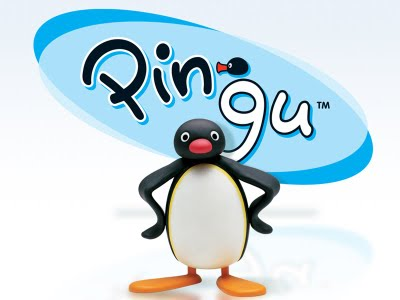

남극을 배경으로 펭귄 가족의 이야기를 그린 클레이 애니메이션. 사랑스러운 캐릭터 핑구와 그 가족들이 살고 있는 남극에서의 재미있는 이야기.
1980년 10월 28일에 발표된 휴고(Hugo)라는 제목의 단편이 모티브로, 이후 1986년 파일럿 에피소드가 만들어졌고 1987년 베를린 국제 영화제에서 처음으로 상영되었다. 파일럿 에피소드의 내용은 정식 버전 1화와 3화를 합친 듯하며, 특히 3화와 가장 유사하다. 정식 첫 에피소드가 제작된 당시는 1988년이고, 1990년 3월 7일에 첫 방영하여 2006년 3월 3일까지 16년에 걸쳐 꾸준히 만들어진 작품이다.